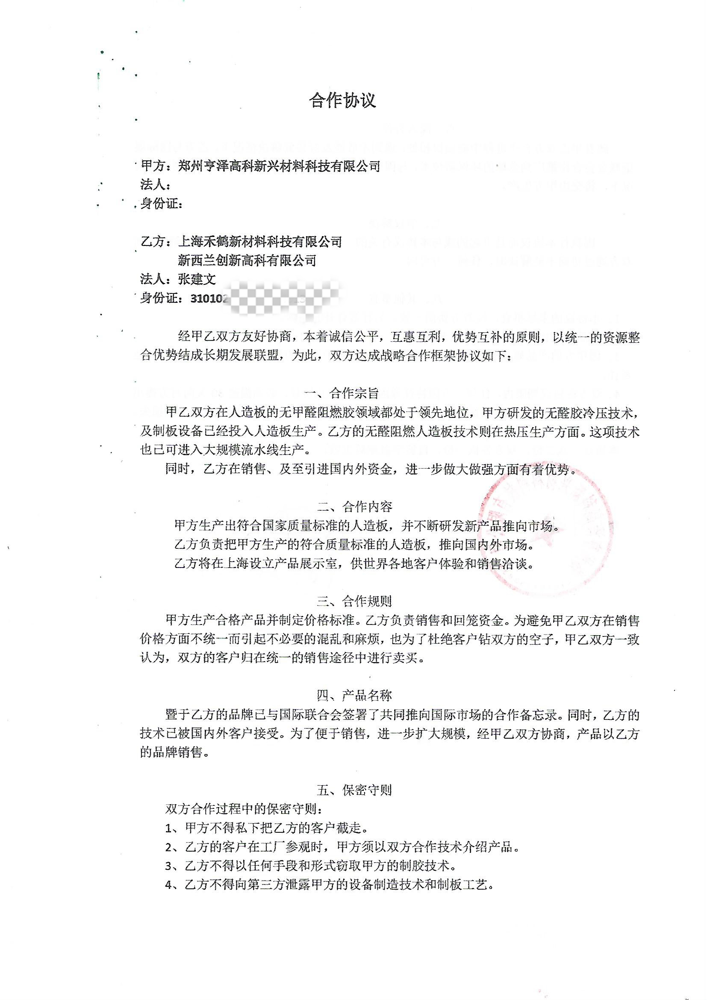
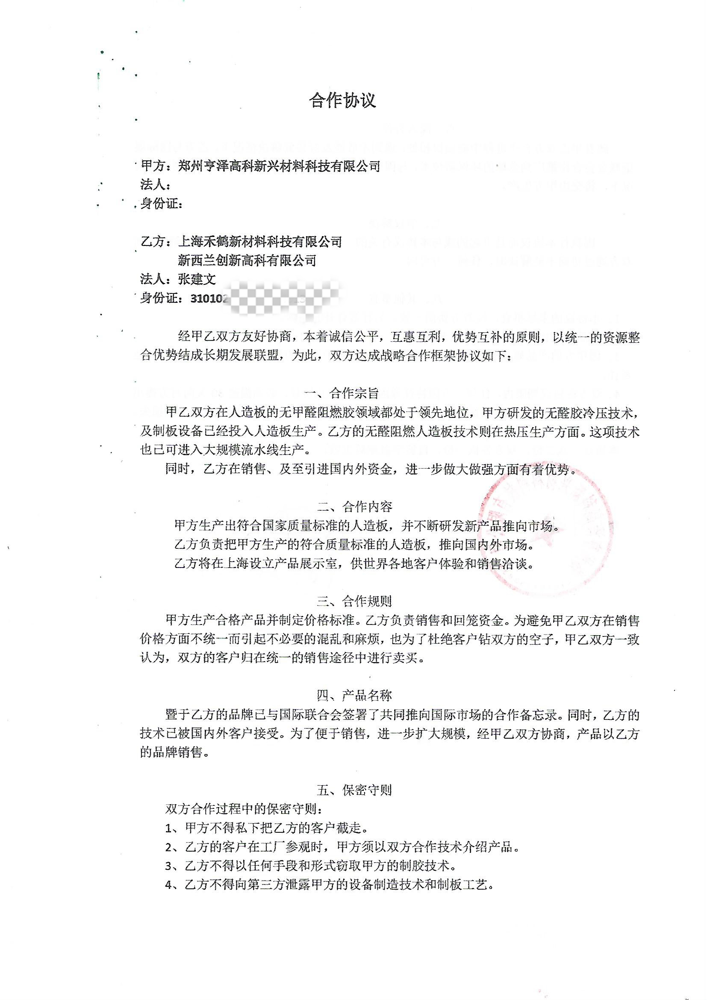

This project was implemented in a Māori community in New Zealand, where a model house was built on-site to demonstrate the systematic construction technology. However, progress in the collaboration was hindered due to the COVID-19 pandemic.
To overcome limitations in material sources and costs, Zhang Jianwen traveled to New Zealand in September 2022. There, he conducted on-site experiments combining volcanic ash (including power plant chimney ash and blast furnace slag — all rich in silica) with his patented solidification binder. After repeated testing, he successfully developed an innovative eco-friendly building material, realizing the goal of "using waste to treat waste."


 
